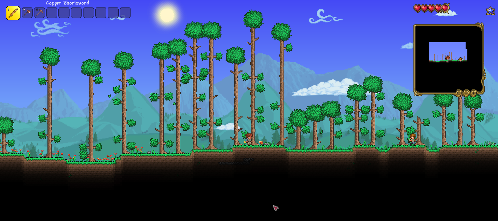
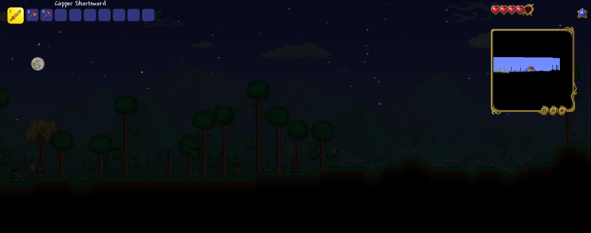

Build, Fight, and Explore... The Realm of Terraria Awaits you...
Terraria is a 2D action-adventure-sandbox game, developed by Re-LOGIC. First released
on windows on 2011 and has since been ported to other platforms. The game consist of exploration,
building, painting, combat and so much more...
Sold by over 44 million copies by 2022. It has become one of the best-selling video games of all time...
A Quick Summary

Your journey begins here...
You will begin your journey in the middle of a wide forest, only having three trusty tools at your disposal - each with different purpose. Not only that, you will also be accompanied by your very trusty NPC - The Guide, to help aid you in your journey. What happens next is up to you, whether you can chop down trees and build a shelter for your comfort, or go exploring and gather the necessary resources. You might also encounter monsters along the way, so be careful.
